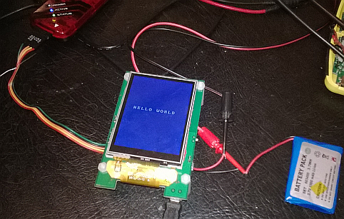

On power up I had what I’m going to refer to as the “white screen of death” for 2 days, basically everything seemed to be working and the signals were good but the TFT was just a white wall of nothingness with a working backlight! After hours of frustration, and rewriting TFT and PMP stuff that were never broken (they worked on the previous board so why would they!), I finally got out the scope and it turned out that the 50 way connector is a bit more picky on how far you have to plug in the FFC and lock it down, real far and real tight is the answer.. and this is where I currently am, hardware all working (apart from the USB power which I’ve already mentioned previously – and now fixed) and software basic drivers seem to be OK (though again only Hello world tests)
Unless I work a lot quicker on my other deadlines or find even more free time this is where I’m going to have to leave it until 2014, so frustrating as its all so cool!
PS I Still haven’t worked out why my Nokia 625 takes such crap close up pictures!